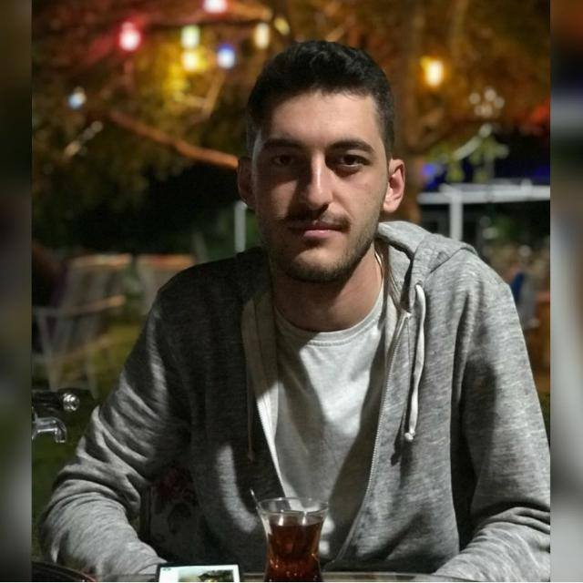

- Programlama Dilleri :
C, C#, C++, PYTHON, RUBY
- Katildigim Konferanslar :
Blockchain Semineri, BMO Teknoloji Gunleri, UBMK
- Makaleler:
- Russell, Stuart J., and Peter Norvig. Artificial intelligence: a modern approach. Malaysia; Pearson Education Limited,, 2016.
- Ferber, Jacques, and Gerhard Weiss. Multi-agent systems: an introduction to distributed artificial intelligence. Vol. 1. Reading: Addison-Wesley, 1999.
- Katildigim Yarismalar:
Tubitak, OBSS Code Masters
- Sertifikalar:
Computer Maintenance Specialist Course
- Is Tecrubesi:
Bilimtek Teknoloji (2 Yil)
- Gelistirilen Projeler:
Kriptolu Haberleþme Aðý
Çevrýmdýþý Kriptolama Aygýtý
- Patent ve Tübitak Projeleri:
Türk Patent Ensitüsü Onaylý Çevrimdýþý Kriptolama Aygiti